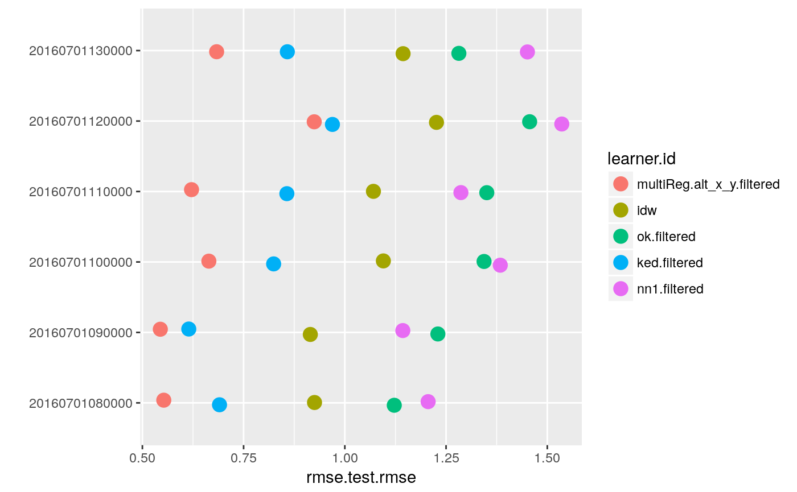

Benchmarking example
Thomas Goossens
11/22/2018
Source:vignettes/benchmarking_example.Rmd
benchmarking_example.RmdPreamble
A benchmark experiment allows to compare how various learners perform one one or multiple tasks. You can read the full documentation about benchmarking experiment on the mlr website.
In this vignette we will present you how to use the makeBenchmark function and we will also explore the kind of outputs you can get from it.
But first we will explain why we have decided to implement our custom version of the benchmarking function rather than simply use the mlr one.
Why create a custom benchmarking function ?
Allow user to have a custom function that is shipped with the package. No need to dig in the extensive mlr documentation for a simple benchmark
As we benchmark not a single dataset but plenty of hourly or daily datasets from our stations network, we need a way to perform, store and analyse thousands of benchmarks while avoiding CPU and RAM saturation.
Specificities of our benchamrking function
Our function allows you to choose a grouping value. This is the number of tasks you want to assign to a single batch benchmarking job. Its purpose is to avoid RAM saturation by writting the result of the batch benchmarking job to a file rather than storing it in RAM.
For example, if you have 20000 hourly records, you will need to perform 20000 benchmarks. Such an amount of information could probably lead to a RAM saturation (depending of your system). To avoid this, you can decide to work by batches of 1000 tasks using grouping = 1000. The function will then create a file containing the bmr results for each batch of 1000 tasks.
Once all the batches have been performed (bmr conducted and written to file), the function will automatically load all the temporary files and construct a single benchmark result object.
Working example
We will benchmark our baseLearners on a set of 3 hourly records. This is of course a small number of hourly records but this is for the sake of example.
Create a dataset containging the 5 hourly sets of records
The makeDataset function provides a list where each element is a dataframe containing an hourly set of records.
# create an hourly dataset
dataset = makeDataset(dfrom = "2016-07-01T08:00:00Z", dto = "2016-07-01T11:00:00Z")Create the 5 tasks using lapply
Our makeTask function is dedicated to the creation of a single task. In order to make multiple tasks from the output of the makeDataset simply use lapply on each element of its elements.
Benchmark the baseLearners on the 5 tasks
# loading the learners preconfigured with the package
data("learners")
# conduct the bmr on 2 tasks
bmr = makeBenchmark(tasks = tasks, prefix = "test", learners = learners$baseLearners, grouping = 1, cpus = 4, path = "./outputs/",keep.pred = TRUE)vizualize performance
# box plots
plotBMRBoxplots(bmr$output$value$bmr, pretty.names = FALSE)
# summary plots
plotBMRSummary(bmr$output$value$bmr, pretty.names = FALSE)
# summary table
bmr$output$value$summary## # A tibble: 5 x 7
## learner.id count min max mean median sd
## <fct> <int> <dbl> <dbl> <dbl> <dbl> <dbl>
## 1 multiReg.alt_x_y.filtered 6 0.544 0.924 0.665 0.643 0.139
## 2 idw 6 0.915 1.23 1.06 1.08 0.123
## 3 ok.filtered 6 1.12 1.46 1.30 1.31 0.115
## 4 ked.filtered 6 0.615 0.969 0.802 0.841 0.128
## 5 nn1.filtered 6 1.14 1.54 1.33 1.34 0.150Check if parallelization improves computing speed
Let’s re-run the same benchmark but on 4 cores this time
# with parallel computing
# bmr.4cores = makeBenchmark(tasks = tasks$output$value[1:3], learners = learners, cpus = 4)We can see that we have an improvement of the computation time of a factor of #r bmr.1core$output$value$exectime/bmr.4cores$output$value$exectime